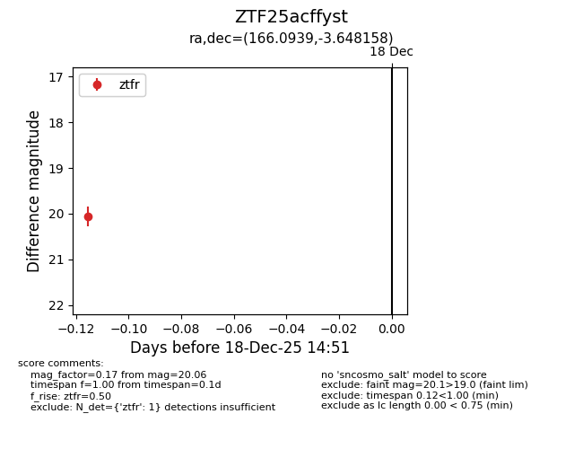
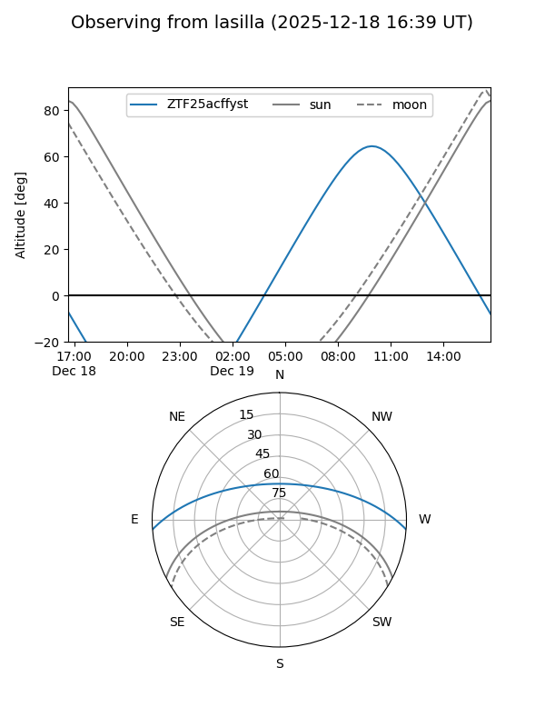
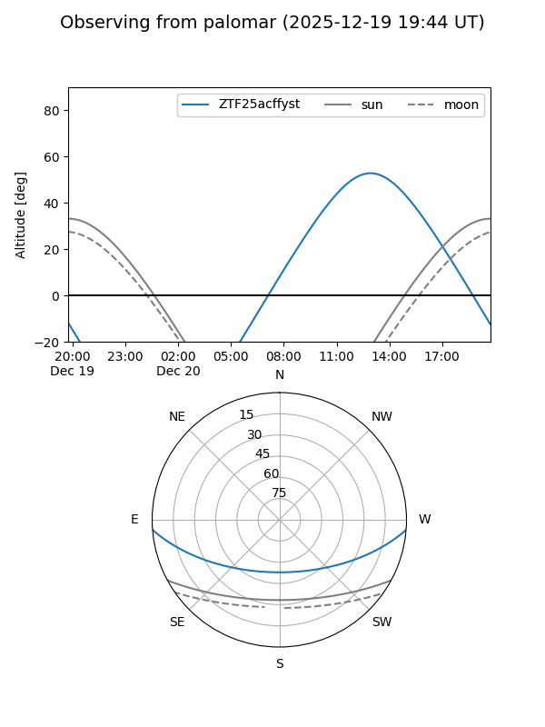
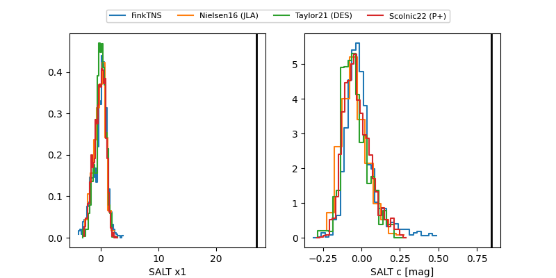

ZTF25acffyst
Target ZTF25acffyst at 2025-12-20 14:54
Aliases and brokers:
FINK: fink-portal.org/ZTF25acffyst
Lasair: lasair-ztf.lsst.ac.uk/objects/ZTF25acffyst
ALeRCE: alerce.online/object/ZTF25acffyst
alt names
ZTF25acffyst (ztf,fink_ztf)
Coordinates:
equatorial (ra, dec) = 166.0939,-3.64816
equatorial (HMS+DMS) = 11:04:22.53,-03:38:53.37
galactic (l, b) = (258.7799,+49.81875)
Flags:
Photometry:
last ztfr=20.35
2 ztfr detections
Lightcurve

Visibility


Additional plots
